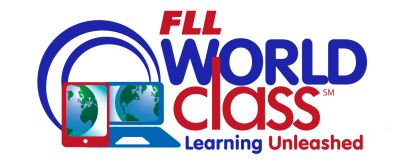

賽事介紹

2014~2015年的題目是WORLD CLASS，顧名思義就是世界的是你的教室，在任何地方都可以學習
賽事介紹
2015~2016年的題目是TRASH TREK，是考驗隊伍對垃圾的再次利用以及回收所制定的題目，隊伍會在討論中得出結果，以及解出當年度的相關競賽問題
賽事介紹

2016~2017的題目是動物大聯盟，今年的題目是讓小隊員學會跟動物相處，透過跟動物相處，來更進一步學習和大自然的相處之道。
賽事介紹
2017~2018的比賽是AQUA GAME 在這一次的比賽中，小隊員們需要在生活中最常見的水，來相處，水大家都知道，但是要如何去利用呢?就經過這一次的比賽來了解吧!
賽事介紹
2018~2019年的題目是INTO ORBIT太空漫遊，在這一個世代中，因應人口的擴張以及快速的成長，人類把移民的腦筋動到了外太空上，在這一次的比賽中，學生們可以學到外太空任務中的辛苦之處。
賽事介紹
今年主題目的是規劃塑造正在成長的都市，擁有更穩定、美觀、實用、容易到達以及可永續發展的建築物及結構。選手可透過解決任務中代表現實問題以獲得分數，也可以在場地內建築新單位來獲得分數。新單位的分數取決於它們的高度及位置。